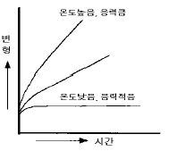
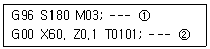
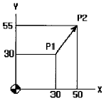
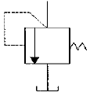
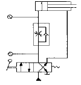
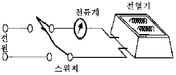

생산자동화기능사 (2002-12-08 기출문제)
1과목: 기계가공법 및 안전관리(대략구분)
1. 절삭가공에서 구성인선의 발생에 대한 방지 대책이 아닌 것은 ?
- 공구 윗면경사각을 크게 할 것
- 윤활성이 있는 절삭제를 사용할 것
- 절삭 깊이를 크게 할 것
- 절삭 속도를 크게 할 것
(정답률: 75%)

2. 안전색채 빨강의 KS규격 표시사항이 아닌 것은 ?
- 피난
- 방화
- 정지
- 고도 위험
(정답률: 66%)
3. 연삭 숫돌의 구성 요소에 해당되지 않는 것은 ?
- 입자
- 입도
- 결합도
- 강도
(정답률: 61%)
4. 드릴 작업시 유의사항 중 틀린 것은 ?
- 복장을 단정히 할것
- 가공물을 단단히 고정할것
- 칩은 기계를 정지시킨 후에 솔로 제거할것
- 장갑을 착용할것
(정답률: 89%)
5. 선반 종류에 대한 설명으로 틀린것은 ?
- 터릿선반 : 볼트, 작은나사 및 핀과 같이 작은 일감을 대량 생산하거나 능률적으로 가공할 때 쓰이는 선반이다.
- 크랭크축 : 철도차량용 크랭크축을 깎는 선반이며 면 선반 판붙이 주축대를 2대마주세운 구조이다.
- 자동선반 : 선반조작을 캠이나 유압기구를 이용, 자동화한 것으로 대량생산에 적합하다.
- 모방선반 : 자동모방장치를 이용하여 모형이나 형판을 따라 바이트를 안내하여 모방절삭하는 선반이다.
(정답률: 60%)
6. 슈퍼 피니싱에서 연삭액으로 사용되지 않는 것은 ?
- 경유
- 스핀들유
- 동물성유
- 기계유
(정답률: 59%)
7. 일반적으로 주철 재료를 선삭할 때의 절삭제는 ?
- 피마자 기름
- 광물성 기름
- 동물성 기름
- 사용하지 않음
(정답률: 48%)
8. 기어가공기 중에서 가장 정밀가공이 될 수 있고, 커터가 직선 절삭운동하고 직선이송 일감이 회전하며, 래크형과 피니언형 커터를 모두 사용하는 기계는 ?
- 기어세이퍼
- 호빙머신
- 마이크로 기어절삭기
- 기어 셰이빙머신
(정답률: 54%)
9. 밀링가공에서 원주를 80등분 하려고 할 때, 필요한 분할판(브라운 샤프형)의 구멍 수는 ?
- 15
- 18
- 19
- 20
(정답률: 65%)
10. 각도 측정기는 ?
- 사인 바
- 높이 게이지
- 깊이 게이지
- 공기 마이크로미터
(정답률: 91%)
2과목: 기계제도(대략구분)
11. 스테인레스강에 내황산성을 높이기 위하여 첨가하는 원소는?
- 티탄(Ti)
- 구리(Cu)
- 알루미늄(Al)
- 몰리브덴(Mo)
(정답률: 43%)
12. 공구강의 구비조건에 해당하지 않는 것은?
- 고온경도가 클 것
- 열처리가 쉬울 것
- 내마멸성이 클 것
- 전연성이 클 것
(정답률: 52%)
13. 7.3 황동에 주석 1% 정도 첨가한 동합금은 ?
- 망간황동
- 쾌삭황동
- 애드미럴티황동
- 네이벌황동
(정답률: 56%)
14. 이의 물림을 순조롭게 하기 위하여 이를 축에 경사시켜준 것으로서, 이 때문에 축에 드러스트를 받는 기어는 ?
- 스퍼 기어
- 헬리컬 기어
- 인터널 기어
- 베벨 기어
(정답률: 60%)
15. 체인 전동의 특성이 아닌 것은?
- 속도비가 일정하다.
- 유지와 수리가 간단하다.
- 내열, 내유, 내습성이 강하다.
- 진동과 소음이 없다.
(정답률: 79%)
16. 다음 중 주석계 화이트 메탈의 특징에 해당되지 않는 것은 ?
- Sb 및 Cu의 함량이 각각 8.3% 정도이면 인장강도와 항복점이 최대로 된다.
- Fe, Zn, Al 등을 많이 첨가할 수록 양질의 베어링 재료가 된다.
- 충격과 진동에 잘 견디며, 대하중의 기계용 베어링 재료로 적합하다.
- 유동성과 주조성이 우수하고 열전도도가 높다.
(정답률: 48%)
17. 다음 주철의 성질 중 관계없는 것은?
- 취성이 크다.
- 경도가 높다.
- 연신이 크다.
- 용해점이 낮아 주조에 적당하다.
(정답률: 42%)
18. 탄소강 중에 함유된 원소중에서 담금균열의 원인이 되는 것은 ?
- Mn
- Si
- S
- P
(정답률: 44%)
19. 단면적이 10 cm2인 봉에 길이방향으로 100 kg의 인장력이 작용할 때 발생하는 인장응력은?
- 5 ㎏/ ㎝2
- 10 ㎏/ ㎝2
- 80 ㎏/ ㎝2
- 99.6 ㎏/ ㎝2
(정답률: 80%)
20. 질화법에 사용하는 기체는?
- 탄산가스
- 코크스
- 목탄가스
- 암모니아가스
(정답률: 50%)
21. 모듈과 압력각이 같으면 어떤 기어하고도 정확하게 물리며, 조립할 때 중심거리에 오차가 있어도 속도비를 정확하게 유지할 수 있는 등 실용적이며 현재 대부분의 일반 전동용 기어에 사용되는 것은?
- 인벌류트기어
- 사이클로이드기어
- 콤퍼지트기어
- 카디오기어
(정답률: 55%)
22. 다른 주철에 비해 규소량이 많고 냉각 속도를 느리게 하여 조직 중에 탄소의 많은 양이 흑연화되어 있는 주철은?
- 회주철
- 백주철
- 반주철
- 합금 주철
(정답률: 57%)
23. 역류를 방지하기 위하여 한 쪽 방향에만 유체가 흘러가게 한 밸브는?
- 게이트 밸브
- 콕
- 감압 밸브
- 첵 밸브
(정답률: 68%)
24. 일반적으로 고온에서 볼수 있는 것으로 금속이 일정한 하중 밑에서 시간이 걸림에 따라 그 변형이 증가되는 현상은?

- 피로(fatigue)
- 크리프(creep)
- 허용응력(allowable stress)
- 안전율(safety factor)
(정답률: 61%)
25. 강판 두께 t=12 mm, 리벳팅한 리벳의 직경 20.2 mm, 피치 48 mm 1줄 겹치기 리벳 조인트가 있다. 1피치 마다의 하중을 1,200 kg이라 할 때 리벳에 생기는 전단응력은 몇 kg/㎜2인가?
- 3.6
- 3.8
- 4.0
- 4.5
(정답률: 46%)
26. CAD/CAM 시스템의 운영방법이 아닌 것은?
- 개방식 운영방법
- 폐쇄식 운영방법
- 간접식 운영방법
- 혼합식 운영방법
(정답률: 37%)
27. 여러대의 공작기계가 컴퓨터와 직접 연결되어 작업을 수행하는 생산시스템으로서 중앙컴퓨터, NC 프로그램을 저장하는 기억장치, 통신선, 공작기계로 구성되어 있는 시스템은?
- CNC
- DNC
- FMS
- FA
(정답률: 64%)
28. 공작기계에서 작업이 수행되기 위해서 공구와 가공물이 서로 움직여야 하는데 CNC시스템에서 사용되지 않는 제어 방식은 어떤 것인가?
- 원호절삭 제어
- 직선절삭 제어
- 위치결정 제어
- 윤곽절삭 제어
(정답률: 38%)
29. 아래 CNC선반 프로그램의 ②번 블록에서 주축회전수는?

- 180 rpm
- 400 rpm
- 674 rpm
- 955 rpm
(정답률: 35%)
30. 컴퓨터 시스템 보드상에서 CPU와 메인메모리(RAM) 사이에 위치하며, CPU와 RAM 사이에서 처리될 자료를 효율적으로 이동할 수 있도록 하여 CPU의 자료 처리 속도를 증가시키는 것은?
- 보조처리기(coprocessor)
- 캐시메모리(cache memory)
- 인터럽트(interrupt)
- ROM
(정답률: 54%)
3과목: 메카트로닉스 일반(대략구분)
31. 머시닝센터에서 증분지령으로 점P1에서 점P2로 급속이동할 때 옳은 것은?

- G90 G00 X50. Y55.;
- G91 G00 X50. Y55.;
- G90 G00 X20. Y25.;
- G91 G00 X20. Y25.;
(정답률: 45%)
32. CNC선반의 공구대의 종류가 아닌 것은?
- 드럼(drum)형 터릿(turret)공구대
- 수직형 공구대
- 수평형 공구대
- 빗(comb)형 공구대
(정답률: 37%)
33. 다음중 머시닝센터에서 사용되는 코드 중 절대좌표 지령은?
- G90
- G91
- G94
- G95
(정답률: 61%)
34. 머시닝센터에서 공구 인선 반지름 보정을 취소하는 준비 기능은?
- G40
- G41
- G42
- G43
(정답률: 42%)
35. 머시닝센터에서 제2 원점 복귀 지령은?
- G28
- G29
- G30
- G32
(정답률: 57%)
36. 유압 기기에서 축압기의 용도를 잘못 설명한 것은?
- 유압 에너지의 저장
- 유압의 충격 흡수
- 공기나 이물질을 기름으로부터 분리
- 일정 압력 유지
(정답률: 72%)
37. 공기압 실린더나 각종 제어 밸브가 원활히 작동 할 수 있도록 윤활유를 공급해 주는 장치는?
- 압력 조절기 (regulator)
- 윤활기 (lubricator)
- 공기 건조기 (air dryer)
- 공기탱크 (air tank)
(정답률: 86%)
38. 다음은 어떤 밸브의 기호를 나타내는가?

- 급속배기밸브
- 셔틀밸브
- 릴리프밸브
- 파일럿조작 체크밸브
(정답률: 73%)
39. 다음 그림의 속도제어 회로의 명칭은?

- 미터 아웃 회로
- 블리드 온 회로
- 블리드 오프 회로
- 미터 인 회로
(정답률: 53%)
40. 대기중의 공기를 압축기로 압축한 공기는 수분을 포함하고 있다. 수분을 제거하기 위한 3종류의 건조방법이 아닌 것은?
- 흡수식 건조
- 흡착식 건조
- 냉동식 건조
- 필터식 건조
(정답률: 61%)
41. 실린더 입구의 분기회로에 유량제어밸브를 설치하여, 실린더 입구측의 불필요한 압유를 배출시켜 펌프의 작동효율을 증진시킨 회로는?
- 미터-인 방식
- 미터-아웃 방식
- 블리드-온 방식
- 블리드-오프 방식
(정답률: 36%)
42. 유압 실린더의 피스톤 직경이 20 mm이고 실린더에 공급되는 오일 압력이 100 kgf/ ㎝2면 유압 실린더가 낼 수 있는 힘의 크기는 약 314 kgf가 된다.(손실량 무시) 동일한 오일 압력 상태에서 피스톤 직경이 40 mm인 실린더를 사용하면 실린더가 낼 수 있는 힘의 크기는 몇 kgf가 되겠는가?
- 157
- 314
- 628
- 1256
(정답률: 30%)
43. 공기 압축기의 설치 조건에 적당하지 않는 것은?
- 저습한 장소
- 유해가스가 적은 장소
- 염풍 유해 물질이 적은 장소
- 직사광선이 비치는 장소
(정답률: 80%)
44. 압력의 표시단위가 아닌 것은 ?
- Pa
- bar
- atm
- Nm
(정답률: 72%)
45. 프레싱작업, 플랜징작업, 리벳팅작업 그리고 펀칭 작업에 이용되는 실린더로써 운동에너지를 이용하기 위한 것은 ?
- 다위치 제어 실린더
- 케이블실린더
- 텔레스코프실린더
- 충격 실린더
(정답률: 64%)
46. 공장자동화시스템의 도입에 의해 얻어지는 효과가 아닌 것은?
- 표준화의 촉진
- 생산능력의 증가
- 공정내 반제품의 증가
- 생산리드타임의 단축
(정답률: 84%)
47. 로봇이 움직일 수 있는 방법의 수를 무엇이라 하는가?
- 자유도
- 가반중량
- 작동영역
- 분해능력
(정답률: 70%)
48. PLC의 주요 구성요소로 적합하지 않은 것은?
- 전원부
- 입출력부
- 전자개폐기
- 중앙처리장치(CPU)
(정답률: 62%)
49. PLC에서 주변장치를 사용하여 프로그램을 메모리에 기억시키는 작업을 무엇이라고 하는가?
- 로딩(loading)
- 코딩(coding)
- 입력할당
- 출력할당
(정답률: 68%)
50. 그림의 전열기의 발열량에는 관계없이 스위치를 개폐하여 전류를 흐르게 하거나 차단시키는 두 동작 가운데 어느 한 동작에 의해 제어명령이 내려지는 제어는 ?

- 정량적 제어
- 정성적 제어
- 되먹임 제어
- 피드백 제어
(정답률: 58%)
51. 다음 중 유도형 센서(고주파 발진형 근접 스위치)가 검출할 수 없는 물질은 ?
- 구리
- 황동
- 철
- 플라스틱
(정답률: 87%)
52. PLC의 장점 중 틀린 것은 ?
- 동작 실행에 대한 내용 변경이 용이하다.
- 프로그램된 내용을 확인할 수 없다.
- 제어 기능량에 비하여 설치 면적이 적다.
- 신뢰성이 높고 고속동작이 가능하다.
(정답률: 83%)
53. 다음중 PLC자체의 프로그램 만으로 처리될 수 없는 것은?
- 보조 릴레이
- 전자접촉기
- 타이머
- 카운터
(정답률: 61%)
54. 다음 중 제어 시스템의 신호처리 방식에 따른 분류에 속하지 않는 것은?
- 동기 제어계
- 디지털 제어계
- 논리 제어계
- 시퀀스 제어계
(정답률: 40%)
55. 컴퓨터 네트워크에서 통상 사용하는 전송속도[bit/sec]가 아닌 것은?
- 600
- 900
- 1200
- 9600
(정답률: 44%)
56. 자동화시스템의 3요소에 대한 설명으로 바르지 못한 것은?
- 입력부
- 출력부
- 제어부
- 전원
(정답률: 82%)
57. 전자계전기(Relay)의 기능이 아닌 것은?
- 연산기능
- 통신기능
- 전달기능
- 변환기능
(정답률: 50%)
58. 전달함수를 설명한 것 중 틀린 것은?
- 정상상태의 주파수 응답을 나타냄
- 선형 제어계에서만 정의됨
- 모든 초기 값을 0으로 했을 때 출력신호의 라플라스 변환과 입력신호의 라플라스 변환과의 비
- 무작위 표본추출에 용이
(정답률: 40%)
59. 자동화 시스템의 작업 요소별 구성요소에서 가공, 조립, 검사 등의 작업을 위해서 일감을 요구되는 위치에 정확히 위치시키고, 필요한 작업을 할 수 있도록 견고하게 고정시켜 주는 기능을 가진 것은?
- 감시장치
- 제어장치
- 치공구
- 창고 시스템
(정답률: 76%)
60. 광감지기(photosensor)는 무엇을 이용한 것인가?
- 빛
- 자석
- 힘
- 속도
(정답률: 87%)